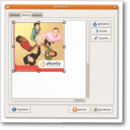

GNOME Scan
The GNOME Scan project aims to provide scanning features integrated throughout the Gnome desktop, similar to printing. The GNOME Scan project consists of a C/GObject library upon which are built standalone applications and plugins for various programs including The Gimp. The application and plugins are called flegita. 
Why is this important ?
Scaning has always been poorly implemented in desktops. Each device is shipped with its own software, often only for proprietary OSes. On free desktops, XSane provides a full-featured standalone application. XSane is currently the best scanner software for the free desktop. However, it is usable only for advanced users. Also, scanning integration in other applications is poor (e.g. OCR in Abiword).
GNOME Scan intends to fill this huge gap in GNOME by implementing a system that eases the addition of scanning features for developers and, and makes scanners easy to use for the users.
Stay tuned
Follow GNOME Scan development at the GNOME Scan blog!
History
GNOME Scan was started as a Google Summer of Code 2006 project lead by Étienne Bersac and mentored by Vincent Untz. After the success of the Summer of Code, the development continued until 0.4 branch. But GNOME Scan was still more or less a proof of concept. 0.6 was a major release: completely redesigned and rewritten codebase, dynamic option handling, loadable module support for backend and more, based on GEGL, and much more